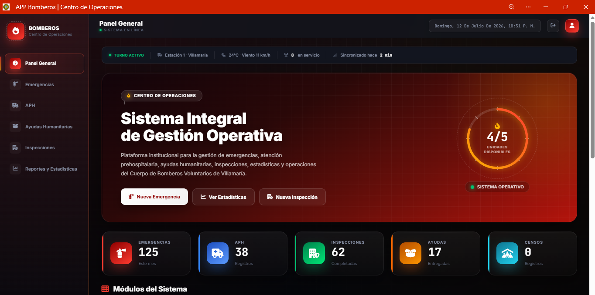
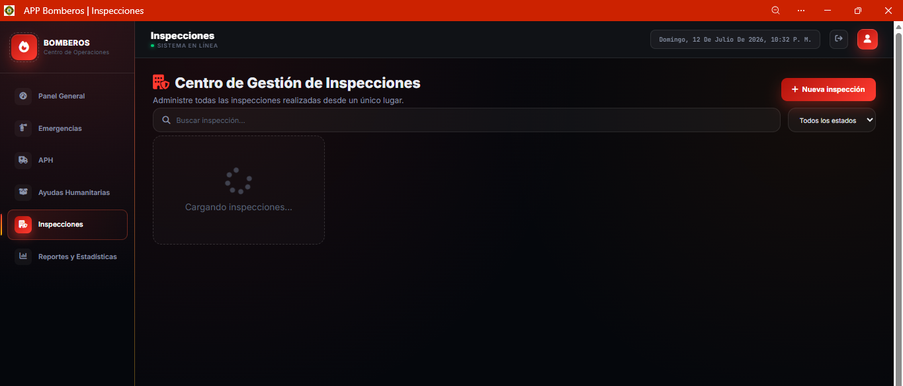
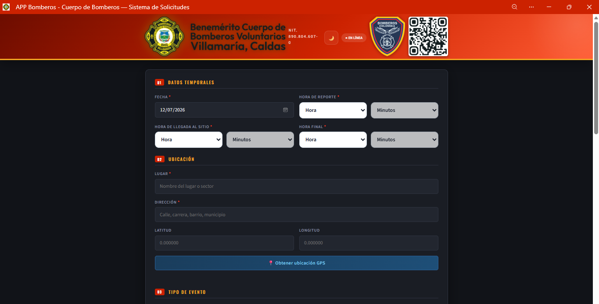
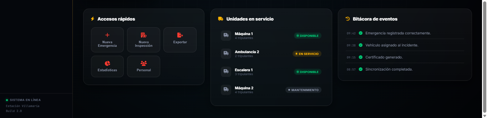

Emergencias
Registro completo de incidentes desde el lugar de la emergencia.
- Información general
- Recursos utilizados
- Vehículos
- Personal atendiente
- Fotografías
- Coordenadas GPS
- Firma digital
- Certificado automático
CRONOM ONE es una plataforma integral diseñada para registrar, administrar y consultar toda la información operativa de un cuerpo de bomberos desde cualquier dispositivo, incluso sin conexión a Internet.
Coordenadas obtenidas automáticamente.
Registro operativo completo.
Captura múltiple de fotografías.
Los datos se sincronizan automáticamente.
CRONOM ONE integra los diferentes procesos operativos de un cuerpo de bomberos dentro de un ecosistema digital moderno, permitiendo capturar información en campo, administrarla desde un Dashboard central y mantener toda la trazabilidad de cada operación.
Registro completo de incidentes y recursos utilizados.
Atención prehospitalaria y seguimiento del paciente.
Gestión de ayudas humanitarias.
Inspecciones técnicas y de seguridad.
CRONOM ONE integra los principales procesos operativos y administrativos de un cuerpo de bomberos dentro de una única solución tecnológica, permitiendo registrar, consultar y administrar la información desde cualquier dispositivo.
Registro completo de incidentes desde el lugar de la emergencia.
Atención prehospitalaria y seguimiento de pacientes.
Gestión y control de ayudas entregadas a la comunidad.
Inspecciones técnicas y visitas de seguridad.
Visualización centralizada de toda la información.
Registro y caracterización de comunidades.
La plataforma incorpora herramientas que optimizan el registro operativo, reducen errores y garantizan la disponibilidad de la información en cualquier momento.
Obtención precisa de coordenadas geográficas.
Captura de múltiples fotografías desde cámara o galería.
Compatible con mouse y pantallas táctiles.
Generación automática de documentos en PDF.
La operación continúa incluso sin Internet.
Envío automático de información cuando vuelve la conexión.
Instalable en Android, iOS y computadores.
Registros protegidos y organizados digitalmente.
Cada reporte sigue un flujo digital que garantiza trazabilidad, disponibilidad de la información y una administración eficiente de las operaciones.
El personal inicia un nuevo reporte desde cualquier dispositivo.
Se diligencia toda la información del servicio.
Obtención automática de coordenadas precisas.
Fotografías desde cámara o galería.
Validación mediante firma táctil o mouse.
Los registros pendientes se envían automáticamente cuando existe conexión.
La información queda disponible para consulta y análisis.
La interfaz ha sido optimizada para permitir que el personal operativo capture información rápidamente durante la atención de cualquier servicio, reduciendo tiempos de registro y evitando el uso de formatos físicos.
Los reportes generados desde campo son organizados automáticamente para facilitar la consulta, seguimiento y administración de la información.
CRONOM ONE fue construido utilizando tecnologías web modernas, permitiendo un alto rendimiento, funcionamiento sin conexión y compatibilidad con múltiples dispositivos.
Interfaces modernas y accesibles.
Experiencia visual de alto nivel.
Lógica dinámica y alto rendimiento.
Instalable como aplicación nativa.
Almacenamiento local seguro.
Actualización automática al recuperar conexión.
Visualización de algunos módulos y pantallas que hacen parte de la experiencia de usuario de CRONOM ONE.




Disminuye significativamente el tiempo de registro de cada incidente.
La plataforma funciona incluso cuando no existe acceso a Internet.
Los datos son capturados directamente desde el lugar de la emergencia.
Toda la información queda organizada dentro del Dashboard.
Cada servicio queda asociado a una ubicación precisa.
Disponible en computadores, tabletas y teléfonos inteligentes.
Una plataforma diseñada para registrar, administrar y consultar toda la operación desde un único ecosistema digital.
Explorar nuevamente